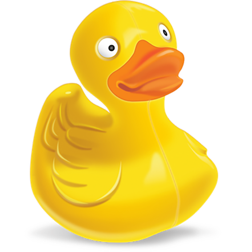
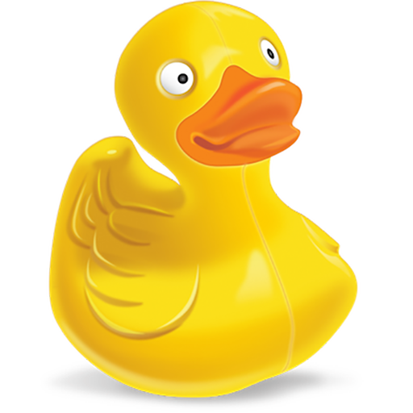

Es war einmal vor sehr langer Zeit...
in einem tiefen und finsteren Wald mit vielen  . Heute ist der 12. Geburtstag der kleinen , sie denkt:
. Heute ist der 12. Geburtstag der kleinen , sie denkt:
Bist du eine positiv denkende Person?
Wenn JA lies unten weiter
Wenn NEIN, bitte klick HIER und wechsle auch die dunkle Seite der SaTiere
„Alles gratulieren mir zum Geburtstag und das Fest is riesig, aber schön langsam wird es Zeit mich zu verabschieden und die große Weite Welt zu entdecken. Jetzt wo ich alt genug bin, mach mich gleich auf den Weg“
Die kleine begleitet sie, doch sie kann mit den großen Schritten des kaum mithalten
Bist du nich immer eine posiviv denkende Person?
Wenn JA lies unten weiter
Wenn NEIN, bitte klick HIER und wechsle auch die dunkle Seite der SaTiere
„Was könnte mein nächstes Ziel sein beziehungsweise was wollte ich schon immer einmal machen?“
fragt sie sich ständig. Plötzlich hat sie eine Idee und sie macht sich auf den Weg um sich ins eintragen zu lassen. Der Weg ist steinig und sehr gefährlich. Der Weg hat eine sehr geringe Bandbreite, die Ausweichmöglichkeiten vor den gräßlichen und gefrässigen sind stark eingeschränkt. Als ob das nicht schon schlimm genug wäre, fällt ihr ein:
Wirklich? Wird es dir hier nicht schon mal zu langweilig?
Wenn NEIN lies unten weiter
Wenn JA, bitte klick HIER und wechsle auch die dunkle Seite der SaTiere
„Mhm fürs brauch ich noch ein passendes Foto! Ich hab zwar gerade keins dabei aber ich werde mir einfach eins auf dem Weg besorgen. So ein Geburtstags-Fotoshooting gehört schließlich auch dazu und dann hab ich auch gleich eine Erinnerung an diesen wundervollen Tag.“
ist eine sehr schlaue Katze und sie möchte dem gerne helfen und huscht fast mit UMTS-Geschwindigkeit den Weg ein Stück nach vorne und miaut ein Schild an, worauf geschrieben steht:
Ach noch immer da? So heilig kannst nicht mal du sein!
Wenn JA lies unten weiter
Wenn NEIN, bitte klick HIER und wechsle auch die dunkle Seite der SaTiere
„Kaufen Sie ihr schönstes Foto! Sie erhalten gratis dazu ein
Die ist schon so viel Ärger gewohnt, dass sie sich gar nicht mehr freuen kann, weil das ist in .
Jetzt verschwinde aber!
Wenn NEIN lies unten weiter
Wenn JA, bitte klick HIER und wechsle auch die dunkle Seite der SaTiere
„Ach , dass hört sich aber interessant an. Ich glaube wir haben unser nächstes Ziel. Kätzchen ich weis es ist schwierig aber kannst du uns den Weg weisen?.“
Doch die gibt nicht auf und läuft mit ihrem eingebauten 64GH Prozessor ins nächste Dorf zum Marktstand mit der Aufschrift: . Für 7 private Informationen erhält sie die Wegauskunft nach :
Du vertraust mir nicht?
Wenn NEIN lies unten weiter
Wenn JA, bitte klick HIER und wechsle auch die dunkle Seite der SaTiere
„Links soll ich gehen? Dann nur los, verlieren wir keine Zeit. Gemeinsam werden wir jeden Weg schaffen. Mir steigen bereits Freudentränen in die Augen“
setzt sich auf einen Baumstamm und beginnt vor Freude zu weinen. Da kommt ein kleines  vorbei und stellt ihm eine :
vorbei und stellt ihm eine :
Jetz mach schon. Nochmal sag ichs nicht mehr!
Wenn NEIN lies unten weiter
Wenn JA, bitte klick HIER und wechsle auch die dunkle Seite der SaTiere
„SELECT beweggründe FROM verstehe-die-Menschen WHERE ort=“strassenrand“ AND person=“kind“ AND augen=“tropfen“"
Doch das versteht sie nicht, also gibt sie die Frage in den translator ein. Dieser wurde aber von lieben und überaus romantischen Studenten der fh St. Pölten verbessern und deswegen erhält sie folgende Übersetzung:
Beweise hier deinen Mut!
Wenn NEIN lies unten weiter
Wenn JA, bitte klick HIER und wechsle auch die dunkle Seite der SaTiere
„Willst du mich heiraten und mit mir eine lebenslange bilden?“
Das ist überrascht, als ihm das um den Hals fällt und sich Herzchen in ihren Augen bilden. Auch hat ein kleines Problem bei der Interpretation und sieht statt den Herzen seine Lieblingsspeise: Eicheln. Die beiden umarmen sich und schweben in der 7. . Das denkt:
Muahahaha! Kum auf die dunkle Seite. Wir sind auch gar nicht soo böse wie du denkst. jedenfalls nicht immer ;)
Wenn NEIN lies unten weiter
Wenn JA, bitte klick HIER und wechsle auch die dunkle Seite der SaTiere
„soetwas habe ich mir schon so oft im erträumt! Mein Lieblingsessen in ihren Augen! Das muss die Perfekte Partnerin sein. Ich spüre die Seelenverwandtschaft“
Das , das und die machen sich weiter auf den Weg „nach links“ ins nach . Neben ihnen fließt der wilde und gefährliche Fluss „as“, sogar und schwimmen darin umher.
Hier gehts zu teufelisch guten Kommentaren
Wenn NEIN lies unten weiter
Wenn JA, bitte klick HIER und wechsle auch die dunkle Seite der SaTiere
„Bald haben wir es geschafft. Es ist nicht mehr weit, aber eine kurze Pause würde uns gut tun“
Sagt das zum . In einer Millisekunde flitzt die wieder USB5-Geschwindigkeit zu einem Gasthaus, wo es heute als Tagesmenü gibt: „ mit Eicheln und Knödeln“
mit Eicheln und Knödeln“
Hast ja recht bleib einfach hier und machs dir bequem.
Wenn JA lies unten weiter
Wenn NEIN, bitte klick HIER und wechsle auch die dunkle Seite der SaTiere
„yummmiiiee , i like ;) So jetzt jetzt haben wir uns gestärkt, und können gleich weiter.“
Denkt das . Es bleibt ihnen auch nichts anderes übrig, der Abgabetermin rückt immer näher und sie müssen endlich am Ziel anzukommen. Das Essen war das beste, doch es macht satt. Als Nachtisch gibt es und einen für jeden. Dann machen sie sich wieder auf ihre abenteuerliche . An der nächsten Weggabelung sind sie verzweifelt und ratlos und fragen deswegen um Rat. „Das nächste Photoshop ist nur 2GB weit entfernt.“
Hast du wirklich geklaubt das war ernst gemeint? Beweg dich zur dunklen Seite du Faulsack!
Wenn NEIN lies unten weiter
Wenn JA, bitte klick HIER und wechsle auch die dunkle Seite der SaTiere
„Nur noch 2 GB – heute Abend sind wir am Ziel. Jetzt mit neuer Energie tun auch die Füße nicht mehr so weh. Aber wir können ja nochma eine kurze Pause einlegen.“
setzt sich auf eine Parkbank inmitten vieler frischer und grün duftender .Plötzlich springt aus dem Dickicht ein wildes Satier hervor. Es ist der schreckliche  . Er steht direkt vor dem . Seinen gräßlich stinkenden Atem direkt in ihr Gesicht hauchend, das Maul weit geöffnet. Die Situation ist sehr brenzlig. Das schlaue kleine holt einen Ast, der so geformt ist und auch genauso aussieht wie eine
. Er steht direkt vor dem . Seinen gräßlich stinkenden Atem direkt in ihr Gesicht hauchend, das Maul weit geöffnet. Die Situation ist sehr brenzlig. Das schlaue kleine holt einen Ast, der so geformt ist und auch genauso aussieht wie eine  und hält sie dem an seinen struppigen Schweif.
und hält sie dem an seinen struppigen Schweif.
Gefährlich Gefählrich ->
Wenn JA lies unten weiter
Wenn NEIN, trau dich, klick bitte HIER und wechsle auch die dunkle Seite der SaTiere
„moi süße Schlange, was machst den du da?“
sagt er um die Schlange zu beruhigen und sich langsam aber doch aus dem Staub zu machen. Er läuft durch eine riesige, stachelige Staude und verletzt sich durch die Stacheln. Doch er kann entkommen und alle drei sind heilfroh - sogar das ein bisschen. Sie spazieren erleichtert durch den Park und das Glück ist weiterhin auf ihrer Seite – sie finden endlich das . Doch anstatt des versprochenen Gratis-Foto-Angebotes samt soll das Foto jetzt 1  kosten.
kosten.
Gute Menschen kommen in den Himmel, böse überall hin. Muaahhhaaa.
Wenn NEIN lies unten weiter
Wenn JA, bitte klick HIER und wechsle auch die böse Seite der SaTiere
„Ich hätte doch einen installieren sollen!, aber wie man so schön sagt, man lernt nur aus Erfahrungen. Wenn ich wieder zuHause bin werde ich in mir gleich installieren“
hat schon wieder etwas gewiddert und läuft zum Marktschreier vor, der jedermann ins Gesicht schreit: „Sie sind der 10.000 Besucher unserer website und erhalten 1 gratis!“
Ein Pferdewagen mit einem auf der Ladefläche hinten fährt vorbei. Es ist der berühmte R2D2 und alle Sa-Tiere verneigen sich tief vor der Macht, die er hat. Weil sich der Marktschreier auch so tief verneigt, verliert er den den er in seiner Hosentasche aufbewahrt hat und das glaubt eine Eichel fallen zu hören und läuft sofort hin und nimmt sie mit. Alle Sa-Tiere gehen wieder ihrer normalen Beschäftigung nach und das denkt sich:
Ich verspreche dir, du wirst es nicht bereuen
Wenn JA lies unten weiter
Wenn NEIN, bitte klick HIER und wechsle auch die dunkle Seite der SaTiere
„ Das gibts ja nicht. Ich habe in gefunden. Mein Traum geht in Erfüllung.“
Doch miaut so lange bei ihm, dass auch mitbekommt, welch großartigen Fund sie gemacht haben! Endlich können sie ins Photoshop gehen. Der Fotograf ist ein großer und er macht ein wunderschönes Portraitfoto mit vielen Ebenen und Maskierungen. Endlich haben sie es geschafft. Sie könnten glücklich sein, doch das denkt:
So letzte Chance und bösen SaTierchen kennenzulernen! Nimm die Chance war! Es wird nicht keine weiteren mehr geben!
Wenn NEIN lies unten weiter
Wenn JA, bitte klick HIER und wechsle auch die dunkle Seite der SaTiere
„Sol wir haben es geschafft. Aber es wird bereits dunkeln. wir sollten uns langsam mal auf den weg nach Hause machen. Mein Blätterbett wartet bereits auf mich.“
So machen sie sich auf den langen , obwohl die Füsse schon sehr schwer sind und kaum jemand Kraft zum Reden hat. Es ist schon ganz dunkel als sie zuhause ankommen und die Mutter des öffnet die Tür. Erleichtert und freuestrahlend nimmt sie ihre Tochter in die Arme und macht folgende :
Wenn du jetzt nicht wechselst, hast du die letzte Möglichkeit verpasst. Ich wollts ja nur mal sagen.
Wenn NEIN lies unten weiter
Wenn JA, bitte klick HIER und wechsle auch die dunkle Seite der SaTiere
"SELECT * FROM hast-du-viel-erlebt + erzaehl-mir-alles;"
Da erzählen die drei ihr die ganze Geschichte, ihr Abenteuer. Die Mutter ist sehr froh, daß das heil nach Hause zurückgekommen ist. Sie freut sich auch über ihre neuen Freunde. Nach einem guten Abendessen reicht sie dem einen Brief voll mit Mehl, wo drinnensteht:
Sehr geehrte Frau ,
nachdem Sie jetzt schon 12Jahre alt sind,
würden wir uns freuen, wenn Sie bei
mitmachen würden.
Unser Angebot für Sie:
- Facebook-Eintrag
- $9999.99
- SALE-SALE-Exclusives Angebot nur für Sie
- villeicht 1 Jahr gültig, wenn du keine Nacktbilder posten!
- mehr als 1 Nutzer
- Mindestalter 12. Jahre
To unscribe this newsletter – push here.
Von meinem iPhone gesendet